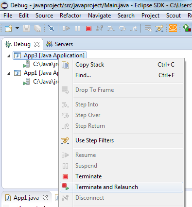
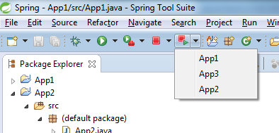

12 February 2016
Are you using the "Terminate and Relaunch" context menu in the Debug view?

Last year Martin Lippert did a demo of the "Spring Tool Suite" at the Eclipse Demo Camp in Zurich. He presented a great addition to the Eclipse Toolbar: the possibility to terminate and relaunch an application from anywhere.

We discussed after his presentation if this feature could be integrated in Eclipse IDE. I think it would be great and I imagine I would use it every day (now I am switching to the Debug perspective to do it). I have opened Bug 487554 for that. Feel free to share your opinion there.